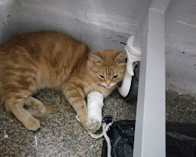

Cats are awesome companions, offering affection, entertainment, low-maintenance care, and therapeutic benefits to enrich your life.
Stray cats need human help.
Stray cats are more likely to contract diseases than pet cats.

Stray cats are also at risk of injury. They may also be injured by people who are cruel to animals.
Stray cats can overpopulate quickly. If you see a stray cat, please consider helping to spay or neuter it.
If you are able to take in a stray cat, you will be giving it a loving home and a chance to live a long and happy life.
The best things in life are rescued. They are the ones that have been through the most and come out stronger. They are the ones that have learned to appreciate the little things in life. They are the ones that are most grateful for a second chance.
-Anonymous
It's up to us to give a rescued cat a second chance!
Sign up to enroll for an adoption by clicking that button over there!